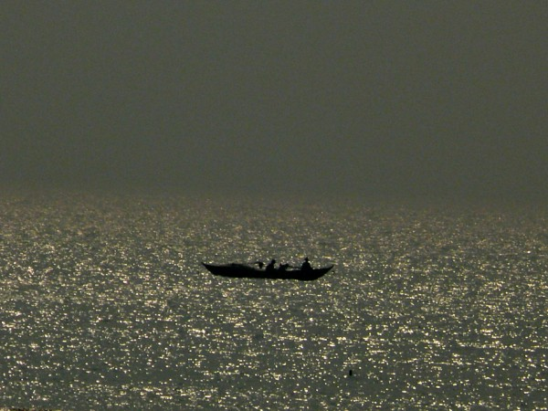
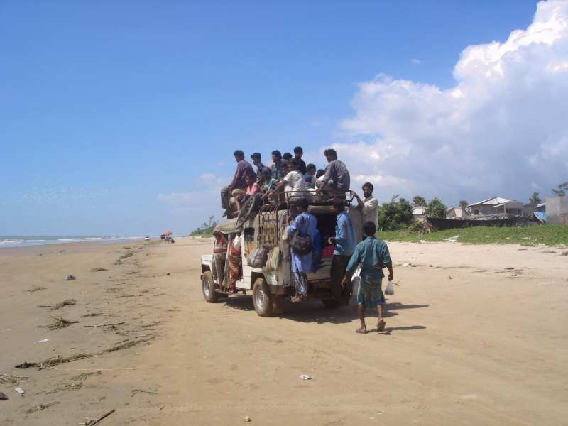

Mandarmani - The Synonym of Beauty

Overview
Mandarmani is a beach resort in Purba Medinipur district. It is famous for its 13km long motorable beach, arguably the longest in India. It is a place of silence, red crabs, and little waves.
How to Get There
By Road: From Kolkata, take the Digha route via Kolaghat and Contai. At Chawalkhola, take a left turn. The village road leads to Dadanpatrabar, from where you can drive along the beach to your resort.
By Bus: Catch a bus to Digha/Chawalkhola from Esplanade (Kolkata). From Chawalkhola, local transport is available.
Attractions

- The Beach: Relax, swim, and watch the red crabs.
- Activities: Beach cricket, volleyball, and boat cruises.
- Sunrise & Sunset: Witness the heavenly view of the sun rising and setting over the Bay of Bengal.
Accommodation
There are several resorts including The Sana Beach, Debraj Beach Resort, and Rose Valley, offering amenities ranging from budget to luxury.